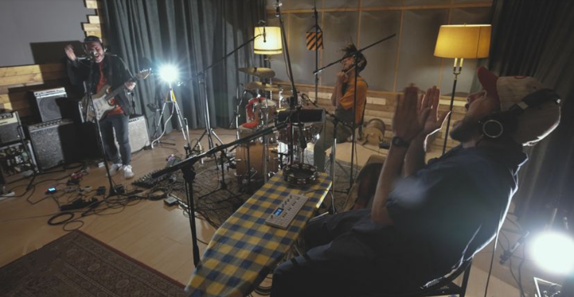

International News

Big Menú es un trío barcelonés que, partiendo de la ventaja de tener a tres eclécticos chefs a los fogones, hace canciones con ingredientes de hip hop, jazz, funk o soul. Tras ejercer de banda de acompañamiento de la cantante argentina Nathy Peluso y otras muchas colaboraciones, la banda demuestra que se vale de ella misma para ofrecer una interesante propuesta.
El grupo presenta en directo desde Sol de Sants Studios su último single, que lleva como título F.A.M.O.U.S., en el que el sarcasmo y el ritmo se mezclan a partes iguales. Big Menu lo componen José Benítez a la batería, Pedro Campos al bajo y Enric Peinado a la guitarra.